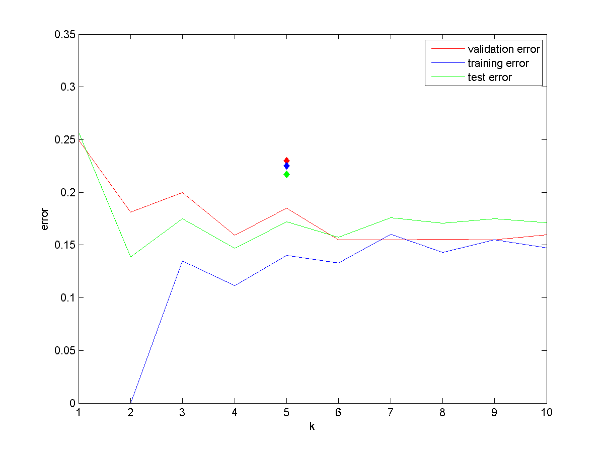

Optimal decision function: f(x1,x2) = x2-(x1-1)^2-1.
Data probability distribution: for negative data, 90% chance in f(x1,x2)<0, 10% chance in f(x1,x2) >0; vice versa for positive data.
Data range (0,2) for both x1 and x2.
There are two parts: one plotting error with different k and the other plotting error with different training sample size.
For the first question, data for each group have sz = 100 labels. The training data and label used for producing the figures, are saved in a file called data_label.mat; load this before proceed with analysis.
For the second question, 10 different sample sizes varing from 10 to 100 were used.
Decision boundary is represented by color; white color indicates non-determinable area, which happens when k is an even number.
Diamond shapes represent error from linear models
Since we know the underlying distribution, we can determine Bayes error, which is 0.1
Need to point out that when k is even, there are areas whose labels cannot be determined. There is no way to compute loss for these areas. In the following figures, these undeterminable areas are ignored (not takend into calculation).
Need to point out that when k is even, there are areas whose labels cannot be determined. There is no way to compute loss for these areas. In the following figures, these undeterminable areas are ignored (not takend into calculation).